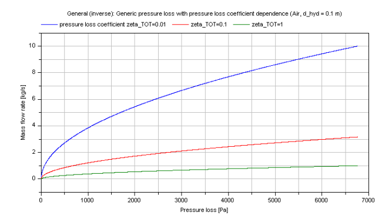

dp_pressureLossCoefficient |
|
Information
This information is part of the Modelica Standard Library maintained by the Modelica Association.
Calculation of a generic pressure loss in dependence of a pressure loss coefficient.
Calculation
The mass flow rate m_flow is determined by:
m_flow = rho*A_cross*(dp/(zeta_TOT *(rho/2))^0.5
with
| A_cross | as cross sectional area [m2], |
| dp | as pressure loss [Pa], |
| rho | as density of fluid [kg/m3], |
| m_flow | as mass flow rate [kg/s], |
| zeta_TOT | as pressure loss coefficient [-]. |
Verification
Compressible case [Mass flow rate = f(dp)]:
The mass flow rate M_FLOW in dependence of the pressure loss dp for a constant pressure loss coefficient zeta_TOT is shown in the figure below.

Note that the verification for dp_pressureLossCoefficient is also valid for this inverse calculation due to using the same functions.
References
- Elmqvist, H., M.Otter and S.E. Cellier:
- Inline integration: A new mixed symbolic / numeric approach for solving differential-algebraic equation systems.. In Proceedings of European Simulation MultiConference, Prague, 1995.
- Wischhusen, S.:
- Dynamische Simulation zur wirtschaftlichen Bewertung von komplexen Energiesystemen.. PhD thesis, Technische Universität Hamburg-Harburg, 2005.